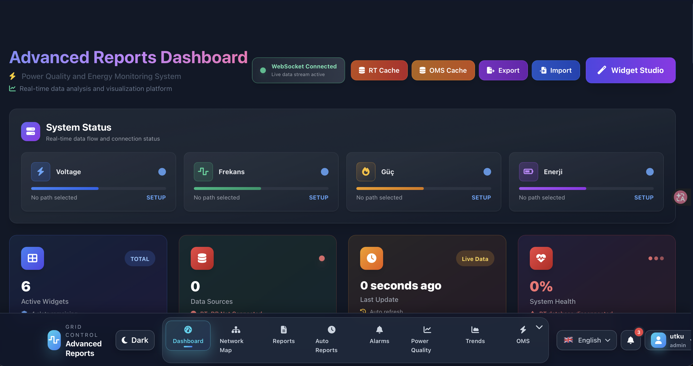
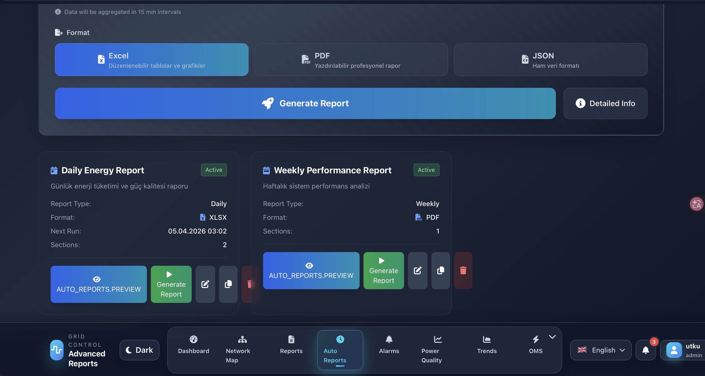
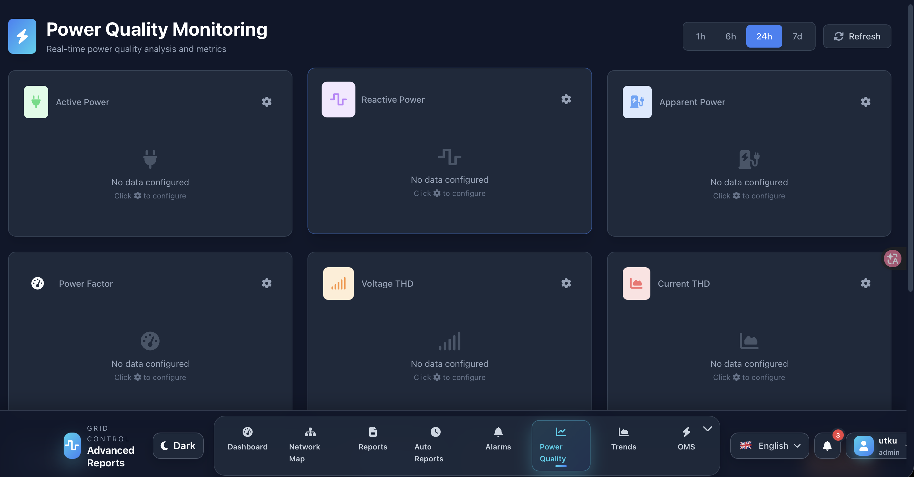

Advanced Reports Platform
A reporting environment built for operations teams that need polished PDF output, Excel exports, and visual network maps from business data.
Report output
Excel
Spreadsheet export
Maps
Network views
Dynamic report engine
Generates professional PDF reports and structured Excel datasets on demand.
Scheduling and automation
Background tasks extract, format, and distribute recurring business reports.
Performance and caching
Reduces slow database loops so the UI stays responsive under larger datasets.
Operational mapping
Visualizes relationships and network structure directly inside the application.
System previews
Real screenshots from the application, showing the reporting UI in context.
Main dashboard

Report configuration

Output and workflow view

Output gallery
Mocked deliverables that show how the platform looks when it exports data to Excel and PDF.
Excel output
Operational Summary.xlsx
| # | A | B | C | D | E | F |
|---|---|---|---|---|---|---|
| 1 | Metric | Today | 7 Days | 30 Days | Delta | Status |
| 2 | Orders | 128 | 812 | 3,492 | +12.4% | Healthy |
| 3 | Revenue | $24,800 | $142,000 | $611,000 | +8.1% | Stable |
| 4 | Avg. Lead Time | 1.4d | 1.6d | 1.8d | -3.2% | Watch |
| 5 | Data Quality | 98.6% | 98.2% | 97.8% | +0.8% | Healthy |
Formula support
Conditional totals and ranking fields built into the export.
Formatting
Header colors, spacing, and data bars for executive readability.
Delivery
Ready for management review and client-facing handoff.
PDF output
Executive report cover
Monthly operations report
Enterprise overview
Summary
A condensed report with totals, top changes, and action items for business review.
Highlights
Designed to print cleanly or be shared directly as a downloadable PDF.